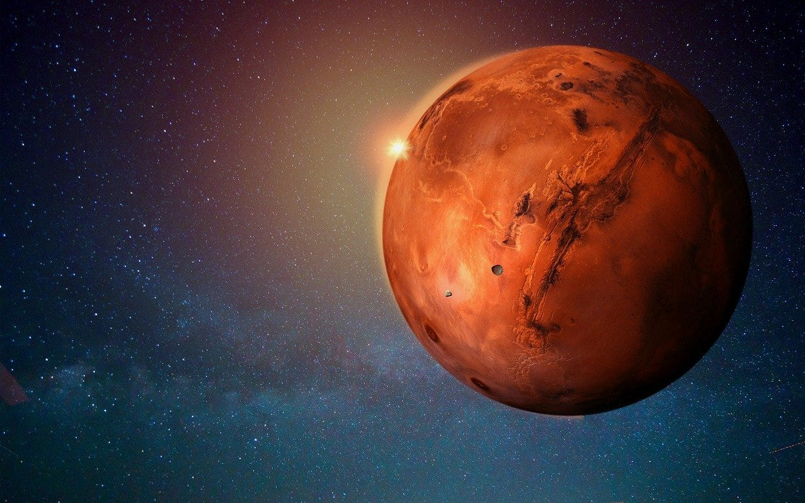

Güneş, Güneş Sistemi'nin merkezinde yer alan ve tüm gezegenleri kütleçekimiyle kontrol eden bir yıldızdır. Kendi enerjisini üreten plazma yapısındaki bu yıldız, hidrojenin helyuma dönüşmesiyle nükleer füzyon reaksiyonları sonucu enerji açığa çıkarır.
Sarı cüce sınıfında olan Güneş, Samanyolu Galaksisi'nde ortalama bir yıldız olarak kabul edilir ve yaklaşık 4,5 milyar yıldır varlığını sürdürmektedir. Dünya'ya en yakın yıldız olması nedeniyle detaylı incelenebilen tek yıldızdır.
MARS

Mars (Eski Türkçede Bakır Sokım, Merih ), Güneş Sistemi'nin Güneş'ten itibaren dördüncü gezegeni. Roma mitolojisindeki savaş tanrısı Mars'a ithafen adlandırılmıştır. Yüzeyindeki yaygın demir oksitten dolayı kızılımsı bir görünüme sahip olduğu için "Kızıl Gezegen" olarak da bilinmektedir.
Uranus
Uranüs, Güneş Sistemi'nde 7. sırada yer alan ve teleskopla keşfedilen ilk gezegen olan buz devi bir gezegendir. Mavi-yeşil rengi, atmosferindeki metan gazından kaynaklanır ve yan yatmış gibi görünen eğik ekseni ile dikkat çeker.
Buz, su, amonyak ve metandan oluşan iç yapısı nedeniyle diğer gaz devlerinden ayrılır. 28 uydusu ve 13 halkası bulunur; halkalar ince ve koyu renklidir.
Güneş etrafındaki dönüşünü 84 yılda tamamlar ve en soğuk atmosfere sahip gezegendir. Voyager 2 uzay aracı, 1986'da Uranüs'ü ziyaret ederek detaylı veriler toplamıştır.
Mars
Mars, Güneş Sistemi'nin dördüncü gezegenidir. Kızıl gezegen olarak bilinir.
Mars
Mars, kızıl gezegen olarak bilinir.
function bilgiGuncelle() {
const secilen = document.getElementById("gezegenSec").value;
const bilgiler = {
mars: {
baslik: "Mars",
gorsel: "mars.jpg",
aciklama: "Mars, kızıl gezegen olarak bilinir.",
ses: "mars.mp3"
},
venus: {
baslik: "Venüs",
gorsel: "venus.jpg",
aciklama: "Venüs, en sıcak gezegendir.",
ses: "venus.mp3"
},
jupiter: {
baslik: "Jüpiter",
gorsel: "jupiter.jpg",
aciklama: "Jüpiter, en büyük gezegendir.",
ses: "jupiter.mp3"
}
};
const secilenBilgi = bilgiler[secilen];
document.getElementById("gezegenBaslik").innerText = secilenBilgi.baslik;
document.getElementById("gezegenGorsel").src = secilenBilgi.gorsel;
document.getElementById("gezegenAciklama").innerText = secilenBilgi.aciklama;
document.getElementById("gezegenSes").src = secilenBilgi.ses;
}
function sesCal() {
document.getElementById("gezegenSes").play();
}